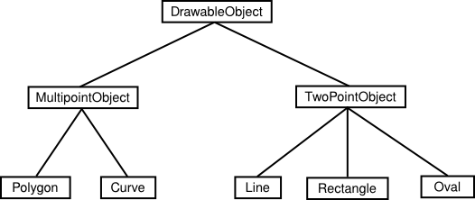

Objects and Object-oriented Programming
Programs must be designed. No one can just sit down at the computer and compose a program of any complexity.
The discipline called
software engineering is concerned with the
construction of correct, working, well-written programs. The software engineer
tries to use accepted and proven methods for analyzing the problem to be solved
and for designing a program to solve that problem.
During the 1970s and into the 80s, the primary software engineering
methodology was structured programming. The
structured programming approach to program design was based on the following
advice: To solve a large problem, break the problem into several pieces and
work on each piece separately; to solve each piece, treat it as a new problem
which can itself be broken down into smaller problems; eventually, you will
work your way down to problems that can be solved directly, without further
decomposition. This approach is called top-down programming.
There is nothing wrong with top-down programming. It is a valuable and often-used approach to problem-solving. However, it is incomplete. For one thing, it deals almost entirely with producing the instructions necessary to solve a problem. But as time went on, people realized that the design of the data structures for a program was at least as important as the design of subroutines and control structures. Top-down programming doesn't give adequate consideration to the data that the program manipulates.
Another problem with strict top-down programming is that it makes it difficult to reuse work done for other projects. By starting with a particular problem and subdividing it into convenient pieces, top-down programming tends to produce a design that is unique to that problem. It is unlikely that you will be able to take a large chunk of programming from another program and fit it into your project, at least not without extensive modification. Producing high-quality programs is difficult and expensive, so programmers and the people who employ them are always eager to reuse past work.
So, in practice, top-down design is often combined with bottom-up design.
In bottom-up design, the approach is to
start "at the bottom," with problems that you already know how to solve (and
for which you might already have a reusable software component at hand). From
there, you can work upwards towards a solution to the overall problem.
The reusable components should be as "modular" as possible. A module
is a component of a larger system that interacts with
the rest of the system in a simple, well-defined, straightforward manner. The
idea is that a module can be "plugged into" a system. The details of what goes
on inside the module are not important to the system as a whole, as long as the
module fulfills its assigned role correctly. This is called information hiding,
and it is one of the most important
principles of software engineering.
One common format for software modules is to contain some data, along with some subroutines for manipulating that data. For example, a mailing-list module might contain a list of names and addresses along with a subroutine for adding a new name, a subroutine for printing mailing labels, and so forth. In such modules, the data itself is often hidden inside the module; a program that uses the module can then manipulate the data only indirectly, by calling the subroutines provided by the module. This protects the data, since it can only be manipulated in known, well-defined ways. And it makes it easier for programs to use the module, since they don't have to worry about the details of how the data is represented. Information about the representation of the data is hidden.
Modules that could support this kind of information-hiding became common in
programming languages in the early 1980s. Since then, a more advanced form of
the same idea has more or less taken over software engineering. This latest
approach is called object-oriented programming,
often abbreviated as OOP.
The central concept of object-oriented programming is the object,
which is a kind of module containing data and
subroutines. The point-of-view in OOP is that an object is a kind of
self-sufficient entity that has an internal state
(the data it contains) and that can respond to messages
(calls to its subroutines). A mailing list object,
for example, has a state consisting of a list of names and addresses. If you
send it a message telling it to add a name, it will respond by modifying its
state to reflect the change. If you send it a message telling it to print
itself, it will respond by printing out its list of names and addresses.
The OOP approach to software engineering is to start by identifying the objects involved in a problem and the messages that those objects should respond to. The program that results is a collection of objects, each with its own data and its own set of responsibilities. The objects interact by sending messages to each other. There is not much "top-down" in the large-scale design of such a program, and people used to more traditional programs can have a hard time getting used to OOP. However, people who use OOP would claim that object-oriented programs tend to be better models of the way the world itself works, and that they are therefore easier to write, easier to understand, and more likely to be correct.
You should think of objects as "knowing" how to respond to certain messages.
Different objects might respond to the same message in different ways. For
example, a "print" message would produce very different results, depending on
the object it is sent to. This property of objects—that different objects
can respond to the same message in different ways—is called polymorphism.
It is common for objects to bear a kind of "family resemblance" to one
another. Objects that contain the same type of data and that respond to the
same messages in the same way belong to the same class.
(In actual programming, the class is primary; that is,
a class is created and then one or more objects are created using that class as
a template.) But objects can be similar without being in exactly the same
class.
For example, consider a drawing program that lets the user draw lines, rectangles, ovals, polygons, and curves on the screen. In the program, each visible object on the screen could be represented by a software object in the program. There would be five classes of objects in the program, one for each type of visible object that can be drawn. All the lines would belong to one class, all the rectangles to another class, and so on. These classes are obviously related; all of them represent "drawable objects." They would, for example, all presumably be able to respond to a "draw yourself" message. Another level of grouping, based on the data needed to represent each type of object, is less obvious, but would be very useful in a program: We can group polygons and curves together as "multipoint objects," while lines, rectangles, and ovals are "two-point objects." (A line is determined by its two endpoints, a rectangle by two of its corners, and an oval by two corners of the rectangle that contains it. The rectangles that I am talking about here have sides that are vertical and horizontal, so that they can be specified by just two points; this is the common meaning of "rectangle" in drawing programs.) We could diagram these relationships as follows:

DrawableObject, MultipointObject, and TwoPointObject would be classes in the
program. MultipointObject and TwoPointObject would be subclasses
of DrawableObject. The class Line would be a
subclass of TwoPointObject and (indirectly) of DrawableObject. A subclass of a
class is said to inherit the properties of that
class. The subclass can add to its inheritance and it can even "override" part
of that inheritance (by defining a different response to some message).
Nevertheless, lines, rectangles, and so on are drawable
objects, and the class DrawableObject expresses this relationship.
Inheritance is a powerful means for organizing a program. It is also related to the problem of reusing software components. A class is the ultimate reusable component. Not only can it be reused directly if it fits exactly into a program you are trying to write, but if it just almost fits, you can still reuse it by defining a subclass and making only the small changes necessary to adapt it exactly to your needs.
So, OOP is meant to be both a superior program-development tool and a partial solution to the software reuse problem. Objects, classes, and object-oriented programming will be important themes throughout the rest of this text. You will start using objects that are built into the Java language in the next chapter, and in Chapter 5 you will begin creating your own classes and objects.